ゲルマンときどき語
star
スター
星、スター
star星
昔は惑星や彗星も star と呼んだ。falling star にその名残。
夜空にちらばる光の点。人はそこに自分の運命が書かれていると信じ、この語根はその信仰ごと英語に流れ込んだ。39語のうち24語はギリシャ語派から astro- の形で入り、ゲルマン語派から直に来た7語のなかに star がいる。災難を指す disaster は文字どおり「悪い星」で、不運を星回りのせいにした占星術のことばであり、印刷記号の asterisk はギリシャ語の「小さな星」、宇宙飛行士の astronaut は「星の船乗り」だ。天文学の astronomy と占星術の astrology は、17世紀までは同じものとして扱われていた。
まん中の星のワイルドから、英単語が生まれた。単語どうしは親子ではなく、同じ祖先から別々に生まれた兄弟。
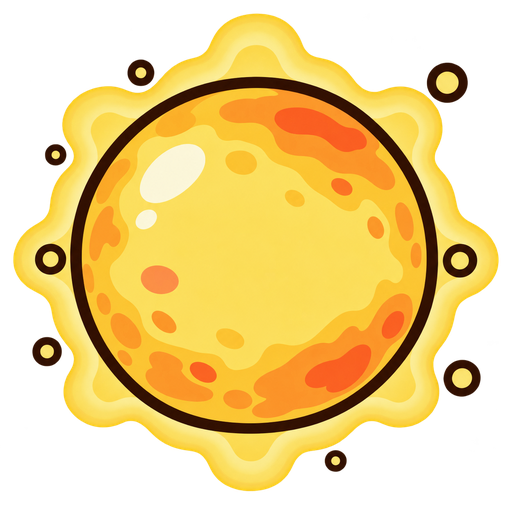
star星ゲルマン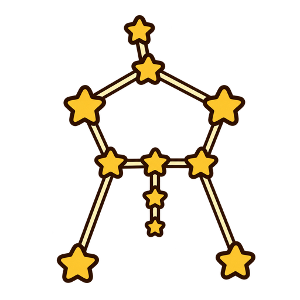
constellation星座ロマンス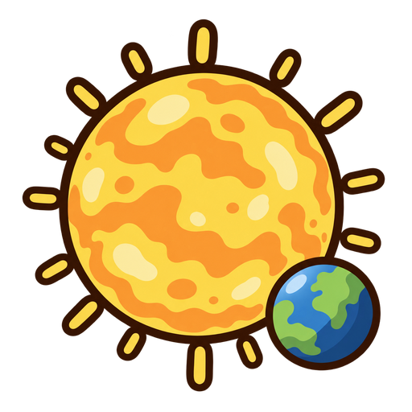
stellar星のロマンス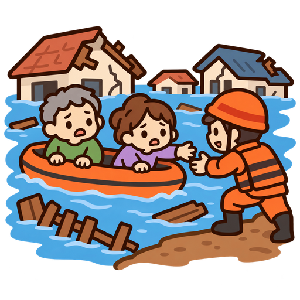
disaster災害ギリシャ※ disaster はギリシャ語の「星」がロマンス語を通って入った語なので、両方に数えています。
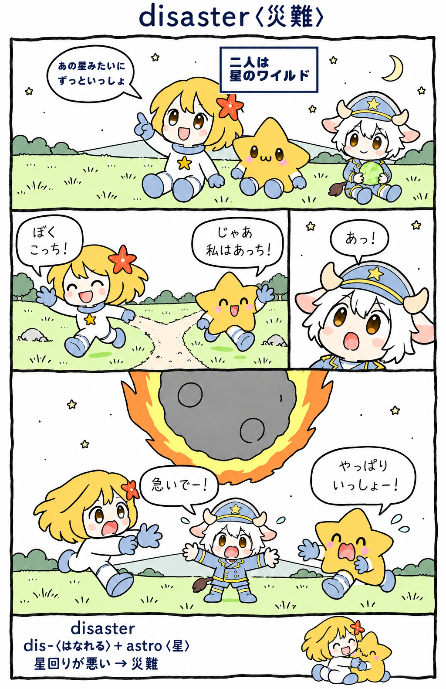
文字どおりは「悪い星」。不運を星回りのせいにした占星術のことば。
よく出会う語から順に。水色のかけらが「星」の部分。
昔は惑星や彗星も star と呼んだ。falling star にその名残。
文字どおりは「悪い星」。不運を星回りのせいにした占星術の語。
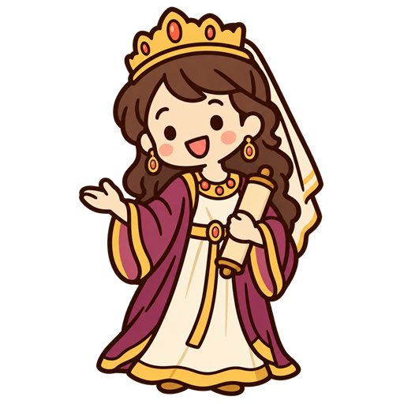
ペルシャ語の「星」から。英語の star と同じ語根にさかのぼる。
もとは占星術の語で、星の配置が人を左右すると考えられた。
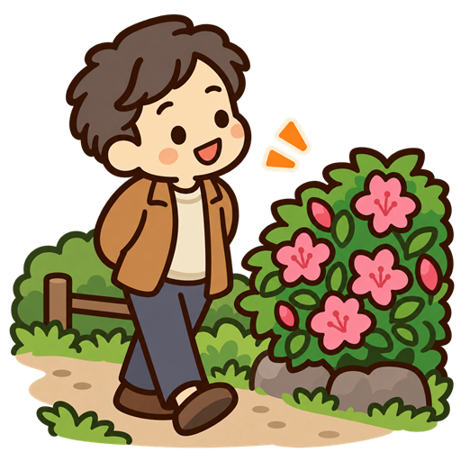
由来は不確かだが、放浪する占星術師 astrologo からとも言われる。
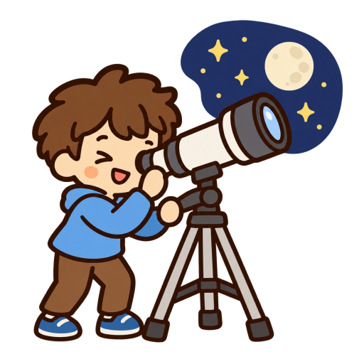
中身は「星を規則で治める」。17世紀まで astrology と区別がなかった。
「けたはずれに巨大な」という意味で使い出したのは1899年から。
「すばらしい」の意味は1883年から。舞台のスターがそのまま形容詞に。
よく出会う語から順に。水色のかけらが「星」の部分。
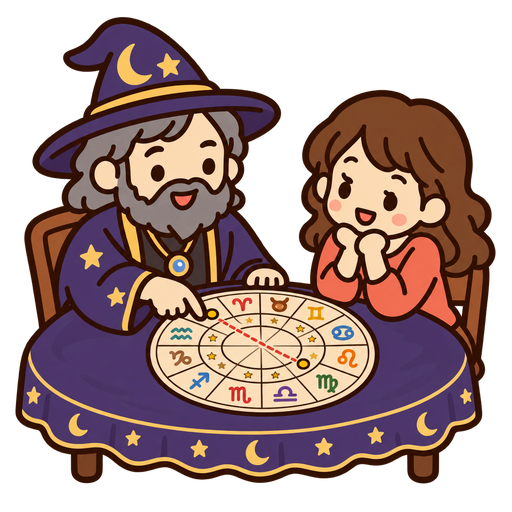
字義は「星を語ること」。もとは天文学と同じ言葉だった。
もとは純粋に「星の」。霊的な意味は19世紀末に神智学が広めた。
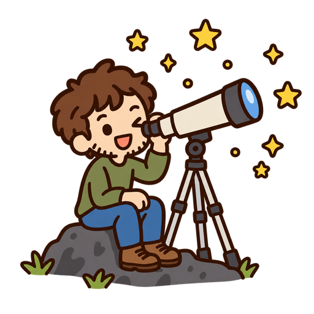
starry-eyed は星のように輝く目のことで、後に「夢見がち」に。
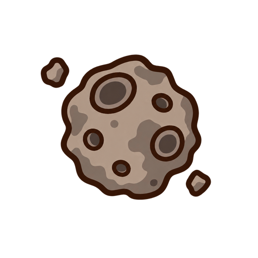
「星のような姿」という意味で、1802年に天文学者が作った新語。
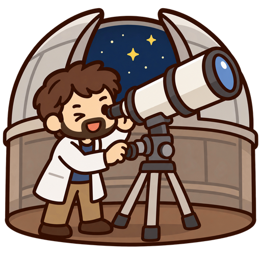
中身は「星」+「きまり」。星の決まりごとを知る人、の意。
ギリシャ語で「小さな星」。印刷の記号としては14世紀末から使う。
語源は「星の船乗り」。1880年の小説では宇宙船の名前だった。
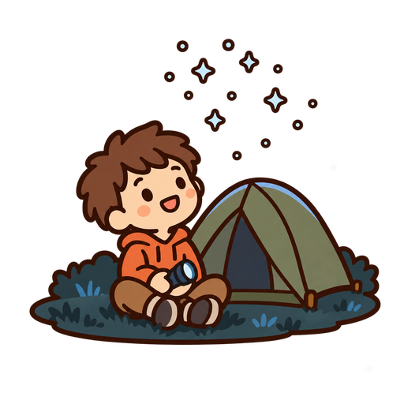
star(星)+ light(光)から。star はラテン語 stella、ギリシャ語 astēr と同じ「星」の語である。
出会いやすい順。下にいくほどレアな語。→p. は絵つきのずかんページ。
| star→p.4スター | 星、スター | ゲルマン | ときどき語 |
| disaster→p.4ディザスタァ | 災害、大失敗 | ギリシャ | ときどき語 |
| Esther→p.4エスタァ | エスター | ギリシャ | めずらし語 |
| constellation→p.4カンステレイション | 星座 | ロマンス | めずらし語 |
| stroll→p.4ストゥロウル | ぶらつく | ゲルマン | めずらし語 |
| astronomy→p.4アストゥラノミィ | 天文学 | ギリシャ | めずらし語 |
| astronomical→p.4アストゥラナミカル | 天文の、けたはずれに巨大な | ギリシャ | 激レア語 |
| stellar→p.4ステラァ | 星の、すばらしい | ロマンス | 激レア語 |
| astrology→p.5アストゥラロジィ | 占星術 | ギリシャ | 激レア語 |
| astral→p.5アストゥラル | 星の | ギリシャ | 激レア語 |
| starry→p.5スターリィ | 星の多い | ゲルマン | 激レア語 |
| asteroid→p.5アスタロイド | 小惑星 | ギリシャ | 激レア語 |
| astronomer→p.5アストゥラナマァ | 天文学者 | ギリシャ | 激レア語 |
| asterisk→p.5アステリスク | 星印 | ギリシャ | 激レア語 |
| astronaut→p.5アストゥラノト | 宇宙飛行士 | ギリシャ | 激レア語 |
| starlight→p.5スターライト | 星明かり | ゲルマン | 激レア語 |
| interstellarインターステラ | 星間の | ロマンス | 激レア語 |
| starfishスターフィシュ | ヒトデ | ギリシャ | 幻レア語 |
| Estellaエステラ | エステラ | ロマンス | 幻レア語 |
| stellateステレイト | 星形の | ロマンス | 幻レア語 |
| stardustスターダスト | 星くず | ゲルマン | 幻レア語 |
| asterアスタァ | アスター | ギリシャ | 幻レア語 |
| astrolabeアストゥラレイブ | アストロラーベ | ギリシャ | 幻レア語 |
| starletスターレト | 新進女優 | ロマンス | 幻レア語 |
| lodestarロウドスター | 導きの星 | ゲルマン | 幻レア語 |
| asterismアスタリズム | 星群 | ギリシャ | 幻レア語 |
| astrobiologyアストゥロウバイアロジィ | 宇宙生物学 | ロマンス | 幻レア語 |
| AstroTurfアストゥロウターフ | アストロターフ(人工芝の商標名) | ゲルマン | 神レア語 |
| periastronペリアストゥラン | 近星点 | ギリシャ | 神レア語 |
| asteroseismologyアスタロウサイズモロジィ | 星震学 | ギリシャ | 神レア語 |
| astroidアストゥロイド | 星形の | ギリシャ | 神レア語 |
| astrolatryアストゥララトゥリィ | 星辰崇拝 | ギリシャ | 神レア語 |
| instellationインステレイション | 星の中に置くこと | ロマンス | 神レア語 |
| astromancyアストゥラマンスィ | 星占い | ギリシャ | 神レア語 |
| astroblemeアストゥロブリーム | 隕石痕 | ギリシャ | 神レア語 |
| astraphobiaアストゥラフォウビア | 電光雷鳴恐怖症 | ギリシャ | 神レア語 |
| apastronアパストゥロン | 遠星点 | ギリシャ | 究極絶滅語 |
| asteriatedオスティアリエイティド | 星形の光彩を示す | ギリシャ | 究極絶滅語 |
| astrognosyアストゥラグノスィ | 恒星学 | ギリシャ | 究極絶滅語 |